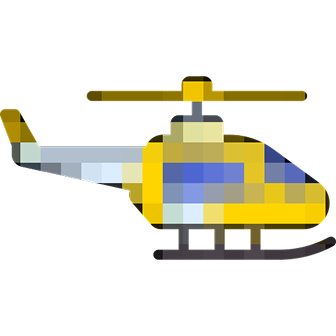

Следующий кейс →В 2003 году Брайан Уильямс действительно находился в Ираке. Но вертолёт, попавший под обстрел, был другим — он летел в той же колонне, но не тем бортом, где находился журналист. На протяжении 12 лет Уильямс публично рассказывал эту историю, постепенно вставляя себя в центр событий. В 2015 году ветераны той операции публично его опровергли. NBC отстранил его от эфира на 6 месяцев. Механизм лжи: постепенное присвоение чужого опыта. Классический феномен «ползучей памяти» — но использованный для построения публичного образа.